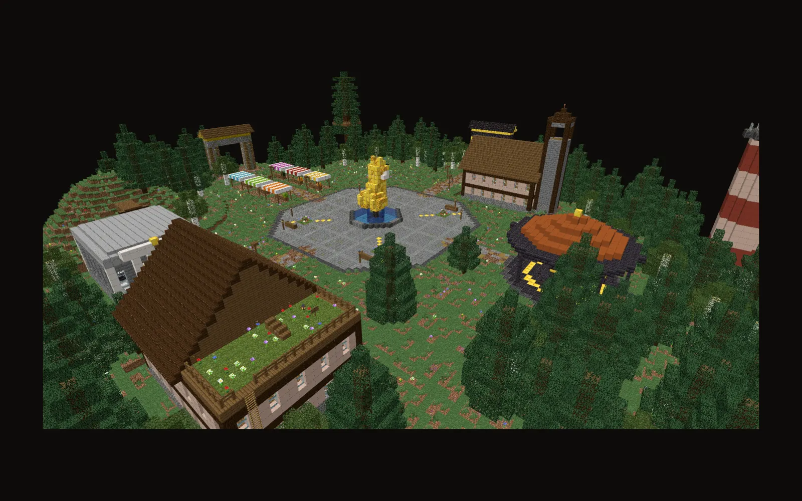
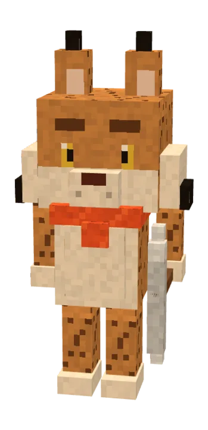

Die Luchsstadt.
Eine schwebende Stadt als Treffpunkt, dahinter deine Plots und eine Farmwelt, die jeden Freitag neu entsteht. Hier baust du, handelst und steigst auf.
Alles, was du brauchst, an einem Platz.
In der Mitte steht ein Brunnen mit goldenem Luchs. Von dort führen Straßen zu allen wichtigen Orten. Der Navigator-Kompass bringt dich mit einem Klick hin.
- AuktionshausBiete Items an und ersteigere besondere Werkzeuge, mit Schätzwert und Abholfach.
- Luchs-BankKontostand und Bestenliste der reichsten Spieler.
- HändlergasseMarktstände mit dem Admin-Shop und dem Item-Ankauf.
- RathausHol dir hier dein erstes Grundstück.
- Kisten-PlatzEin Pavillon mit den drei Luchs-Kisten.
- PortaleZur Plotwelt, zur Farmwelt und zurück in die Lobby.
Ein Grund für jeden Tag.
Jobs, Quests und der Luchs-Pass greifen ineinander. Fortschritt über Wochen, nicht über Stunden.
Sechs Jobs
Bergbau, Holzfäller, Gräber, Farmer, Jäger und Angler laufen parallel. Jeder hat eigene Level, Meilensteine und eine Top 10.
Tages- und Wochenquests
Jeden Tag drei Quests, jede Woche drei weitere. Für alle gleich, mit Bonus, wenn du alle schaffst.
Tägliche Belohnung
Jeder Tag am Stück bringt mehr Coins, dazu Extras bei 3, 7, 14, 30, 60, 100 und 365 Tagen.
Luchs-Pass
Jeden Monat eine neue Saison mit 50 Stufen. Pass-XP gibt es für Quests, Belohnungen und Job-Aufstiege.
Erfolge & Prestige
18 Erfolge in 8 Kategorien. Auf Level 100 startest du neu und bekommst einen Prestige-Stern am Namen.
Ränge
Mit /rang steigst du bis Supreme auf, mit Spielzeit, Spieler-Level und Coins. Kein Echtgeld.
Handeln wie in einer echten Stadt.
Kistenshops
Verkaufe aus deinen eigenen Kisten an andere Spieler.
Geldscheine
Coins als Item mit Seriennummer. Jeder Schein gilt nur einmal.
Coinflip, Jackpot, Lotto
Glücksspiele mit Spielgeld, für die Mutigen.
Kopfgeld
Setz ein Kopfgeld aus. Wer den Spieler in der Farmwelt besiegt, kassiert.
Spieler-Warps & Post
Eigene Warps zu deinem Shop und Post, die auch offline ankommt.
Clan-Kasse
Sammelt als Clan Coins in einer gemeinsamen Kasse.

Minions, Items, Schattenluchs.
Die besonderen Dinge von CityBuild stellen wir auf einer eigenen Seite vor: Minions, die offline sammeln, Werkzeuge mit Sternen und Seltenheit und ein eigener Mob mit Bossleiste.
Zu den Features